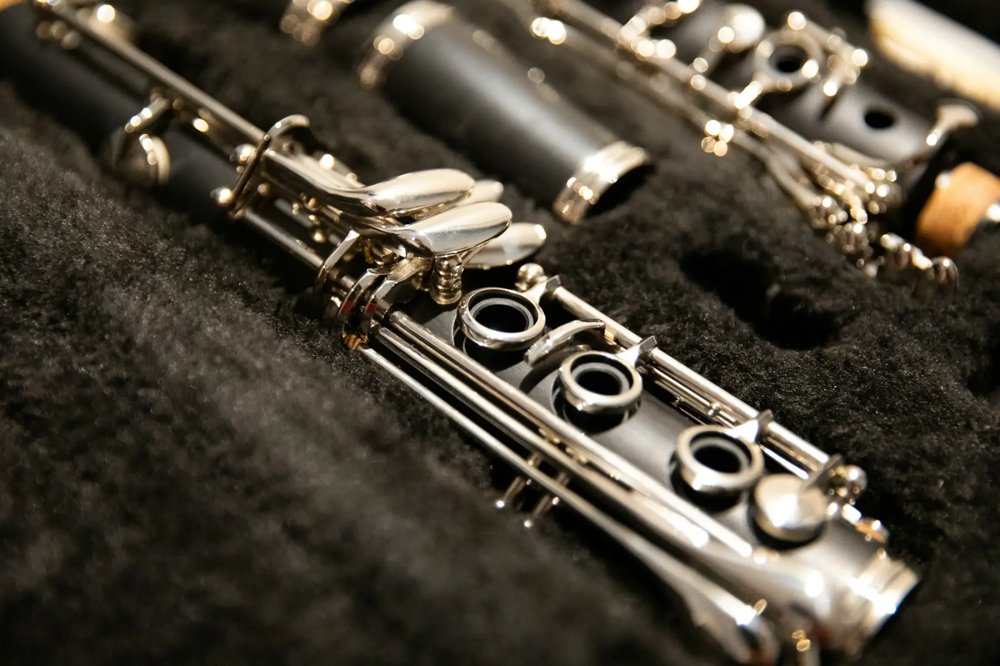
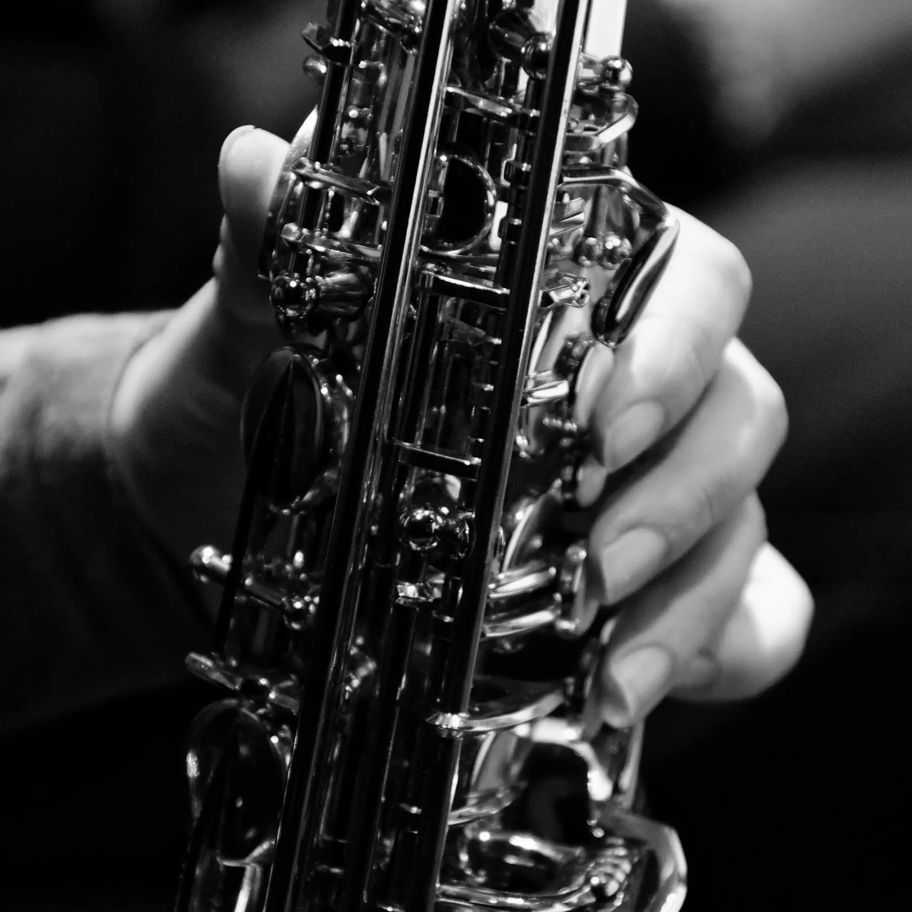
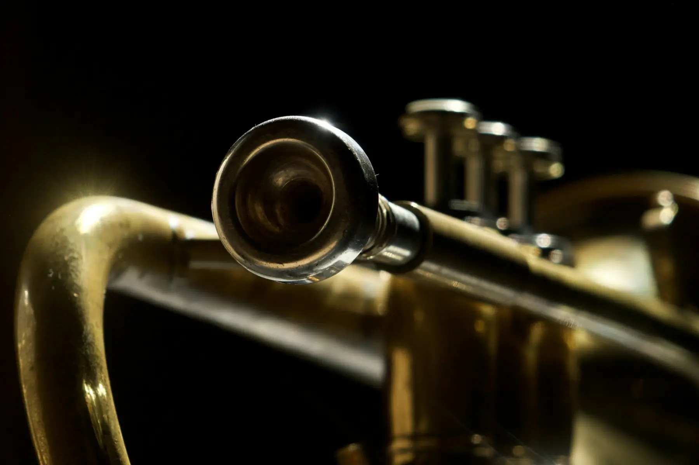
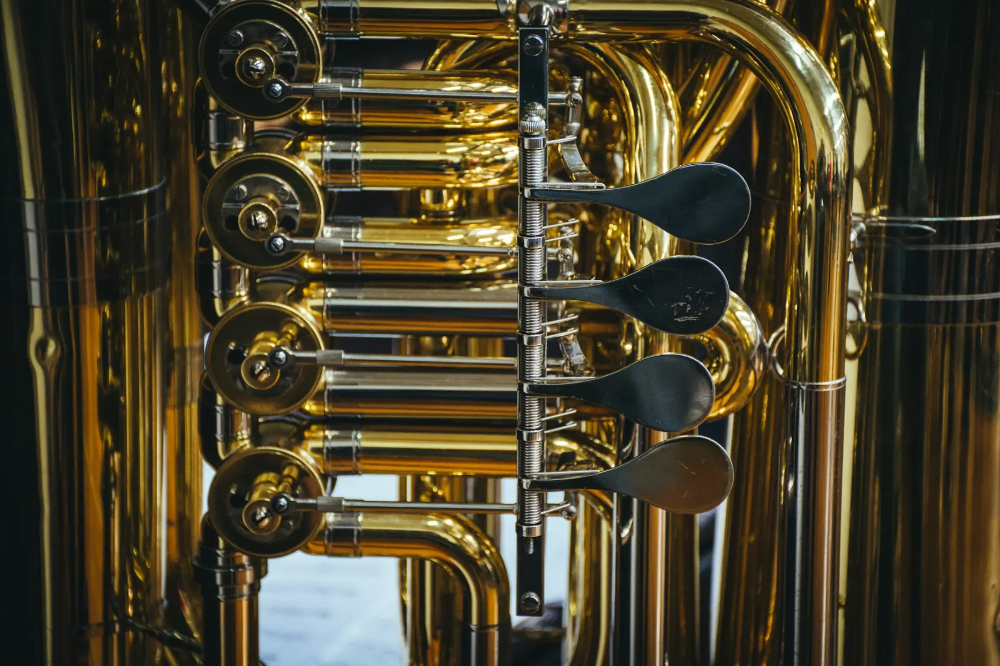
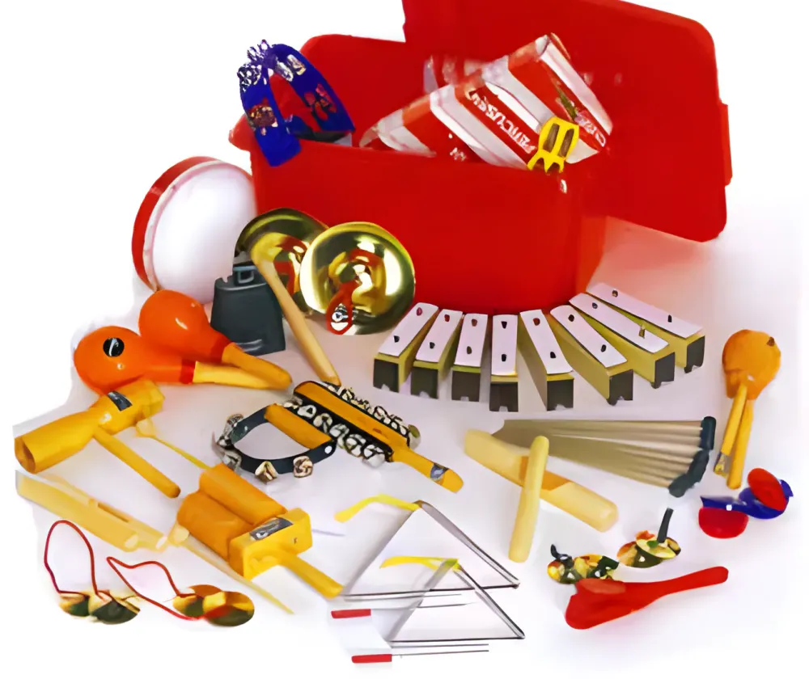

Instruments & prices
Every instrument on our list, with the model, what it is and the price including VAT. Ring or email to check stock before you call in, and ask about Try before you buy.
Prices inc. VAT, as on our current list. POA means price on request.
Flutes & piccolos
Student flutes with curved headjoints for small hands, up to solid silver Altus, Azumi and Miyazawa flutes, plus piccolos, alto and bass flutes. 20 models.
| Brand | Model | Description | Price inc. VAT |
|---|---|---|---|
| Yamaha | YPC-32Piccolo | Resonite body silver-plated headjoint | €899.00 |
| Yamaha | YFL 212CDFlute | Closed hole silver-plated, with curved and straight headjoint | €850.00 |
| Yamaha | YFL 212Flute | Closed hole silver-plated | €750.00 |
| Trevor James | 10XCDFlute | Curved & straight headjoint For smaller children, under age 9 approx | €730.00 |
| Trevor James | Privilege 31PFE-SLRFlute | Closed hole silver-plated; solid silver lip-plate & riser | €699.00 |
| Trevor James | 10XFlute | Closed hole silver plate with silver lip/riser | €599.00 |
| Altus | A10 (prev 1007)Flute | Open hole; solid silver headjoint & tube; E-mechanism | €5,190.00 |
| Trevor James | PiccoloPiccolo | Resonite body silver-plated headjoint | €450.00 |
| Altus | A9 (prev 907)Flute | Open hole; solid silver headjoint; E-mechanism | €3,599.00 |
| Trevor James | Bass FluteBass flute | Solid silver lip and riser | €3,295.00 |
| Miyazawa | PB202-REFlute | Open hole; offset G; solid silver headjoint; part brogger | €3,250.00 |
| Azumi | Z3Flute | Open hole; solid silver headjoint & tube; E-mechanism | €2,450.00 |
| Trevor James | Alto Flute - copperAlto flute | Copper body, solid silver lip & riser | €2,395.00 |
| Trevor James | PerformerAlto flute | Alto Flute | €1,950.00 |
| Trevor James | Virtuoso 31VVFlute | Open hole; solid silver headjoint & tube; E-mechanism New, with VOCE headjoint | €1,890.00 |
| Azumi | Z2Flute | Open hole; solid silver headjoint; E-mechanism | €1,750.00 |
| Trevor James | 3TPGR grenadillaPiccolo | Grenadilla body and handmade grenadilla headjoint | €1,350.00 |
| Yamaha | YPC-62Piccolo | Grenadilla body and headjoint | €1,333.00 |
| Yamaha | YFL 372Flute | Open hole; with offset G; solid silver headjoint | €1,295.00 |
| Trevor James | Cantabile/Chanson 31CVFlute | Open hole; offset G; solid silver headjoint New, with VOCE headjoint | €1,250.00 |
Clarinets & bass clarinets
Buffet from the Prodige to the R-13 Prestige, Yamaha and Leblanc, and Buffet bass clarinets. 11 models.

| Brand | Model | Description | Price inc. VAT |
|---|---|---|---|
| Buffet | ProdigeClarinet | Bb Resonite body; silver-plated keys New model, replaces the B12 | €580.00 |
| Buffet | E-12FClarinet | Bb grenadilla body; silver-plated keys | €1,299.00 |
| Buffet | E-13Clarinet | Bb grenadilla body; silver-plated keys | €1,750.00 |
| Buffet | R-13/RCClarinet | Bb grenadilla body; silver-plated keys | €3,699.00 |
| Buffet | R-13/RC PrestigeClarinet | Bb grenadilla body; silver-plated keys | €5,199.00 |
| Buffet | R-13 GreenlineClarinet | Bb Pulverised Blackwood & resin SP keys Special offer | Price on request |
| Yamaha | YCL 255Clarinet | Bb Resonite body, silver-plated keys | Price on request |
| Leblanc | L7214Clarinet | Bb Resonite body, silver-plated keys, adj. Thumb rest | €450.00 |
| Yamaha | YCL 450Clarinet | Bb Resonite body; nickel-plated keys | Price on request |
| Buffet | 1180Bass clarinet | Bb grenadilla body, silver-plated keys. bell and neck | €5,500.00 |
| Buffet | Prestige BC1193Bass clarinet | Bass Clarinet extending to low C, silver-plated keys | Price on request |
Saxophones soprano to baritone
Trevor James, Yamaha, Buffet, Yanagisawa, Selmer Paris, Conn-Selmer and Elkhart. 20 models.

| Brand | Model | Description | Price inc. VAT |
|---|---|---|---|
| Elkhart | SopranoSaxophone | Soprano; curved; lacquered | €649.00 |
| Conn-Selmer | Avant Tenor ATS180Saxophone | Tenor; lacquered | €1,125.00 |
| Selmer Paris | Super 80 Series llSaxophone | Tenor; lacquered; engraved | €4,999.00 |
| Trevor James | Classic/The HornSaxophone | Alto, lacquered (with High F#) | €750.00 |
| Trevor James | ClassicSaxophone | Tenor, lacquered (with High F#) | €995.00 |
| Trevor James | SaxophoneSaxophone | Baritone, lacquered | €3,800.00 |
| Yanagisawa | A-W01Alto sax | Alto; lacquered | €3,199.00 |
| Trevor James | SRAlto sax | Alto; lacquered | €1,499.00 |
| Yamaha | YAS 480Alto sax | Alto; lacquered | €1,850.00 |
| Yamaha | YAS 62Alto sax | Alto; lacquered | €2,699.00 |
| Trevor James | SIGNATURE CUSTOM 'RAW'Alto sax | Raw finish | €2,699.00 |
| Trevor James | SIGNATURE CUSTOM RAW XSAlto sax | Raw finish, bigger bell | €2,950.00 |
| Yamaha | YSS 475Soprano sax | €2,295.00 | |
| Yamaha | YTS 280Tenor sax | Lacquered (with high F#) | €1,488.00 |
| Trevor James | SRTenor sax | Lacquered | €1,999.00 |
| Yamaha | YTS 480Tenor sax | Lacquered | €2,188.00 |
| Trevor James | CUSTOM 'RAW'XSTenor sax | Raw finish | €3,499.00 |
| Buffet | 100 SeriesSaxophone | Alto; lacquered Our most popular sax | €750.00 |
| Yamaha | YAS 280Alto sax | Alto; lacquered | €1,080.00 |
| Buffet | 100 SeriesTenor sax | Tenor; lacquered | €995.00 |
Oboes
Thumbplate and conservatoire system oboes from Buffet, Howarth and Rigoutat. 4 models.
| Brand | Model | Description | Price inc. VAT |
|---|---|---|---|
| Buffet | Prodige 4131Oboe | Thumbplate system; range to low Bb | €2,100.00 |
| Howarth | S-10Oboe | Thumbplate system; range to low Bb | €2,590.00 |
| Rigoutat | RIECOboe | Full Conservatoire system grenadilla wood | €4,950.00 |
| Buffet | Prodige 4030Oboe | Conservatoire system; range to low Bb | €2,100.00 |
Bassoons
Schreiber bassoons in alpine maple, including a short-reach model. 2 models.
| Brand | Model | Description | Price inc. VAT |
|---|---|---|---|
| Schreiber | WS 5016Bassoon | Conservatoire; 25 keys, alpine maple | Price on request |
| Schreiber | WS 5013Bassoon | Short Reach; 23 keys, alpine maple | Price on request |
Trumpets & flugel horn
Yamaha from the 2330 to the Xeno artist models, Bach Strads, Besson, B&S, and the plastic pTrumpet. 18 models.

| Brand | Model | Description | Price inc. VAT |
|---|---|---|---|
| Yamaha | 8335LATrumpet | Xeno Custom; Wayne Bergeron | €2,636.00 |
| Yamaha | 9335CHSTrumpet | Silver plate, Xeno Artist model; Chicago | €3,668.00 |
| Yamaha | 8335/STrumpet | Xeno; medium large bore Special offer | €2,195.00 |
| Yamaha | 8340EMTrumpet | Lacquer Eric Miyashiro Custom | €3,022.00 |
| Bach | TR400sTrumpet | Medium large bore; Monel Valves; silver plate Special offer | €750.00 |
| Yamaha | 4335GSllTrumpet | Silver plate, medium large bore | €850.00 |
| Bach | 180ML Strad LacquerTrumpet | Medium large bore; lacquer | €3,150.00 |
| Bach | 180ML Strad SilverTrumpet | Medium large bore; silver plate | €3,299.00 |
| Yamaha | 8310ZSTrumpet | Silver plate, Bobby Shew model; 5inch bell | €1,948.00 |
| Bach | AristocratTrumpet | Lacquer, medium large bore | €495.00 |
| Yamaha | 2330Trumpet | Lacquer medium large bore | €490.00 |
| Yamaha | 9335NYSTrumpet | Silver plate, Xeno Artist model; New York | €3,668.00 |
| Yamaha | YFH631GFlugel horn | Medium small bore, gold brass bell | €1,854.00 |
| pTrumpet | pTrumpetTrumpet | Plastic! Various colours | €179.00 |
| Besson | BE110Trumpet | Lacquer, medium large bore | €450.00 |
| Besson | BE111Trumpet | Lacquer or silver plate | €880.00 |
| B&S | Challenger 1, 3137-STrumpet | Silver plate Excellent value for money | €1,750.00 |
| B&S | Challenger 2Trumpet | Silver plate | €2,399.00 |
Cornets
Besson and B&S cornets. 3 models.
| Brand | Model | Description | Price inc. VAT |
|---|---|---|---|
| B&S | Challenger 1Cornet | Lacquer, medium large bore | €1,999.00 |
| Besson | BE120Cornet | Lacquer/silver plate, medium large bore | €680.00 |
| Besson | BE928GSCornet | Silver plate | €2,699.00 |
French horns
Single and full double horns from Yamaha, Hoyer and Elkhart. 6 models.
| Brand | Model | Description | Price inc. VAT |
|---|---|---|---|
| Hoyer | K10French horn | Bb/F; detachable bell, Marcus Bonna case | €9,500.00 |
| Yamaha | YHR314French horn | Single, Key of F | €1,563.00 |
| Yamaha | YHR567French horn | Full double Bb/F 12mm bore | €3,900.00 |
| Elkhart | 100FHFrench horn | Key of F or Bb | €495.00 |
| Hoyer | 6801French horn | Full double Bb/F | €4,499.00 |
| Hoyer | 6801AFrench horn | Full double Bb/F; detachable bell | €4,799.00 |
Trombones
Besson, Courtois, Conn, Elkhart and the plastic pBone. 8 models.
| Brand | Model | Description | Price inc. VAT |
|---|---|---|---|
| Besson / Courtois | BE130/AC103T lacquerTrombone | Medium large bore; lacquer | €750.00 |
| Courtois | AC440BRTrombone | Gold Brass bell | €4,200.00 |
| Courtois | 280BOTrombone | Medium large bore | €1,699.00 |
| Elkhart | 100TBTrombone | Lacquer, Medium bore | €399.00 |
| Conn | 8HTrombone | 547 inch bore, Rose Brass bell | Price on request |
| Conn | 88HTrombone | 547 inch bore, 8.5 inch Rose Brass bell, Bb/F | €3,999.00 |
| Conn | 88HCLTrombone | 547 inch bore, 8.5 inch Rose Brass bell, CL2000 rotor system | Price on request |
| pBone | pBoneTrombone | Plastic! Various colours | €179.00 |
Euphoniums & tubas
Besson euphoniums and tubas, up to the Sovereign models. 6 models.

| Brand | Model | Description | Price inc. VAT |
|---|---|---|---|
| Besson | BE162Euphonium | 3 valve .580 bore | €1,650.00 |
| Besson | BE165/163Euphonium | 4 valve .580 bore | €2,150.00 |
| Besson | BE967Euphonium | Lacquer/silver plate; Sovereign; 14.72mm bore | €7,600.00 |
| Besson | BE177Tuba | Eb 3 valve | €2,499.00 |
| Besson | BE187Tuba | Bb 3 valve | €2,799.00 |
| Besson | BE981/982Tuba | Lacquer/silver plate; Sovereign model; 17 inch bell | €8,999.00 |
Recorders Aulos & Moeck
Aulos for the classroom, with a volume price on the 205 descant in the yellow bag. Moeck Rottenburgh recorders are designed after instruments by Jean Rottenburgh (Brussels 1672–1756), and come in cases with a maintenance set, except maple, pearwood and boxwood, which are impregnated and need no oiling.
| Brand | Model | Description | Price inc. VAT |
|---|---|---|---|
| Aulos | 205Recorder | Descant. Volume discounts apply | €18.00 |
| Aulos | 209NRecorder | Treble. 5% off 10 or more | €27.90 |
| Aulos | 309Recorder | Treble. 5% off 10 or more | €41.50 |
| Aulos | 311NRecorder | Tenor. 5% off 5 or more | €75.00 |
| Aulos | 533Recorder | Bass | €460.00 |
| 10 or more | €17.30 |
|---|---|
| 20 or more | €16.75 |
| 40 or more | €16.25 |
| 60 or more | €15.90 |
| 100 or more | €15.40 |
| Brand | Model | Description | Price inc. VAT |
|---|---|---|---|
| Moeck | Flauto 021HRecorder | Soprano (descant) baroque; light finish; synthetic | €25.00 |
| Moeck | Flauto 021BRecorder | Soprano (descant) baroque; dark finish | €25.00 |
| Moeck | Flauto Leggero 223LRecorder | Maple, in a modern shape, with a modern style linen bag | €80.00 |
| Moeck | Rottenburgh 219Recorder | Sopranino; maple; in 2 parts Special price | €125.00 |
| Moeck | Rottenburgh 419Recorder | Sopranino; rosewood; in 2 parts Special price | €203.00 |
| Moeck | Rottenburgh 229Recorder | Soprano (descant); maple; in 3 parts | €175.00 |
| Moeck | RottenburghRecorder | Soprano (descant); rosewood; in 3 parts | €330.00 |
| Moeck | Rottenburgh 529Recorder | Soprano (descant); ebony; in 3 parts | €380.00 |
| Moeck | Rottenburgh 239Recorder | Alto (treble); maple; in 3 parts | €290.00 |
| Moeck | RottenburghRecorder | Alto (treble); rosewood; in 3 parts | €575.00 |
| Moeck | Rottenburgh 539Recorder | Alto (treble); ebony; in 3 parts | €699.00 |
| Moeck | RottenburghRecorder | Tenor; maple; in 3 parts; no key | €380.00 |
Accessories
Seven pages of them in our catalogue. A few of what's in it:
Ligatures & reeds
Ligatures for clarinet, soprano, alto and tenor sax from BG, Rovner and Selmer, including the Rovner Eddie Daniels. Vandoren reed trimmer blades.
Cases & covers
Gator flute cases, Rosetti cases for alto and tenor sax, clarinet and trumpet, and Trevor James flute case covers in black, blue, claret, green and purple.
Care & cleaning
Selmer care kits for French horn, trombone and trumpet, cleaning rods, Bach and Boosey bore cleaners, mouthpiece brushes, cork grease, lacquer polish and gauze cloths.
Batons & the rest
Batons from Super Maestro and Percussion Plus, a Bach pair in a leather case, BG neck straps and flute cushions, gig bags, and the Aulos fife.
School percussion
221 instruments in the school percussion catalogue, mostly Percussion Plus, with Playsound, Latin Percussion, Meinl and others.

Tuned
- Glockenspiels, 8 and 17 note
- Chime bar sets and step stands
- Boomwhackers
- Combi bells and octachimes
Hand percussion
- Tambourines and tambours
- Shakers, egg shakers and maracas
- Castanets, claves and wood blocks
- Triangles, cowbells, Tibetan bells
Also for the class
- Marching cymbals and timpani sticks
- Ocarinas, kazoos, samba whistles
- Beater sets
- Keyboard stands
Sheet music
Our music catalogues are listed by instrument and by ensemble. Email us the title you need.
Woodwind
- Flute
- Clarinet
- Oboe
- Bassoon
- Saxophone
- Recorder
- Mixed woodwind ensembles
Brass
- Trumpet & cornet
- French horn
- Trombone & euphonium
- Tuba
- Mixed brass ensembles
Strings, keys & guitar
- Violin
- Viola
- Cello
- String bass
- String ensembles
- Guitar
- Piano
Bands, schools & voices
- Orchestra
- Concert band
- Brass band
- School percussion & school music
- Songs, arias, anthems & songbooks
- Class & variable ensembles
- Musical plays & cantatas
- General instruction
Not sure which one? Ring us.